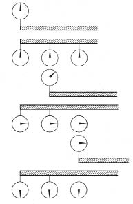
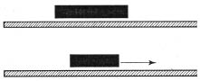
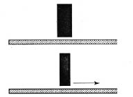

Yeni varsayımlarımız şunlardır:
1) Boşluktaki ışık hızı, birbirine ilişkin (relative), bir-biçimli hareket eden bütün KS’lerde aynıdır.
2) Birbirine ilişkin (relative), bir-biçimli hareket eden bütün KS’lerde, bütün doğa yasaları aynıdır.
İlişkinlik (relativity) teorisi bu iki varsayımla başlar. Artık klasik dönüşümü kullanmayacağız; çünkü varsayımlarımızla çeliştiğini biliyoruz.
Burada, bilimde her zaman olduğu gibi öteden beri yerleşmiş, çoğu zaman eleştirisiz benimsenmiş önyargılardan kendimizi kurtarmalıyız. 1. ve 2. maddelerdeki değişikliklerin deneyle çelişmeye yol açtığını gördüğümüz için, onların geçerliğini açıkça belirlemek ve biricik zayıf noktaya, konumların ve hızların bir KS’den öbürüne dönüştürülüşüne parmak basmak yürekliliğini göstermeliyiz. Amacımız, 1. ve 2. maddelerden sonuçlar çıkarmak, bu varsayımların klasik dönüşümle nasıl çeliştiğini görmek, ve elde edilen sonuçların fiziksel anlamını ortaya çıkarmaktır.
İçindeki ve dışındaki gözlemcilerle birlikte hareket eden oda örneğimize bir daha başvuracağız. Odanın tam ortasından gene bir ışık işareti gönderiliyor, ve o iki gözlemciye gözlemeyi bekledikleri şeyin ne olduğunu soruyoruz. Bu sırada yalnız iki ilkemizi kabul ediyor ve ışık dalgalarının yayıldığı ortam üzerine daha önce söylenenleri unutuyoruz. Gözlemcilerimizin yanıtları şöyle olacaktır:
İç gözlemci: Odanın ortasından çıkan ışık işareti, duvarlara aynı zamanda varacaktır, çünkü bütün duvarlar ışık kaynağından eşit uzaklıktadır ve ışık hızı bütün yönlerde aynıdır.
Dış gözlemci: Benim sistemimde, ışık hızı oda ile birlikte hareket eden gözlemcinin sistemindeki ışık hızının aynıdır. Işık kaynağının benim KS’mde hareket edip etmemesinin benim için önemi yoktur; çünkü kaynağın hareketi ışık hızını etkilememektedir. Benim gördüğüm, bütün yönlerde aynı standart çabuklukla yol alan bir ışık işaretidir. Duvarlardan biri ışık işaretinden “kaçmaya” çalışırken, öbürü onu “yakalamaya” uğraşıyor. Bundan dolayı, kaçan duvar, ışık ile, kovalayan duvarda biraz sonra rastlaşacaktır. Odanın hızı ışığınkine oranla küçük kaldıkça, fark çok önemsiz olacaksa da, ışık işareti, hareket yönüne dik olan bu iki karşıt duvarla tam aynı anda rastlaşmayacaktır.
İki gözlemcinin öngörülerini birbiriyle karşılaştırırsak, klasik fiziğin görünüşte en sağlam kavramları ile açıkça çelişen en şaşırtıcı sonuca varırız. İki olgu, yani iki duvara ulaşan iki ışık işareti, iç gözlemci için zamandaştır, oysa dış gözlemci için öyle değildir. Klasik fizikte, bir tek saat ve bütün KS’lerdeki gözlemcilerin hepsi için bir tek zaman akışı vardı. Zaman ve dolayısı ile “zamandaş”, “daha önce”, “daha sonra” gibi sözcüklerin herhangi bir KS’ye bağlı olmayan salt (absolute) anlamları vardı. Bir KS’de aynı zamanda geçen iki olay, zorunlu olarak bütün KS’lerde de aynı zamanda geçiyordu.
1. ve 2. varsayımlar, yani ilişkinlik (relativity) teorisi, bizi bu görüşten vazgeçmeye zorlar. Demin, bir KS’de aynı zamanda, ama başka bir KS’de farklı zamanlarda geçen iki olay gördük. Ödevimiz, bu sonucu anlamak, “bir KS’de zamandaş olan iki olay, başka bir KS’de zamandaş olamayabilir” sözünün anlamını kavramaktır.
“Bir KS’de zamandaş iki olay” ne demektir? Bununla ne denmek istendiğini herkes sezgisel olarak bilir görünür. Ama biz, sezgiye aşırı güvenmenin ne kadar yanıltıcı olduğunu bildiğimiz için sakıngan olalım ve kesin tanımlar yapmaya çalışalım. Önce basit bir soruyu yanıtlayalım:
Saat nedir?
İlkel öznel zaman duygusu, izlenimlerimizi sıraya koymamızı, bir olayın daha önce, bir başkasının daha sonra geçtiğini söyleyebilmemizi sağlar. Ama iki olay arasındaki sürenin 10 saniye olduğunu saptayabilmek için bir saat gerekir. Saatin kullanılması ile birlikte zaman kavramı nesnelleşir. Herhangi bir fiziksel görüngü tıpatıp ve istendiği kadar yinelenebiliyorsa, bir saat gibi kullanılabilir. Böyle bir olayın başlangıcı ve bitimi arasındaki süre zaman birimi olarak alınırsa, bu fiziksel sürecin (process) yinelenmesi ile istendiği kadar uzun zaman aralıkları ölçülebilir. Basit kum saatinden en karmaşık zaman ölçerlere kadar, bütün saatler, bu ilkeye uyar. Kum saatinde zaman birimi, kumun üstteki cam kaptan alttakine akması için geçen süredir. Aynı fiziksel süreç, kum saati altüst edilerek yinelenebilir.
Birbirinden uzak iki noktada, kesinlikle aynı zamanı gösteren kusursuz iki saat var. Bunun nasıl doğrulandığı bizi hiç kaygılandırmasın. Peki ama, bunun gerçek anlamı nedir? Birbirinden uzaktaki saatlerin hep aynı zamanı gösterdiğini nasıl saptayabiliriz? Akla gelen yollardan biri televizyondan yararlanmaktır. Televizyonun yalnız bir örnek olarak kullanıldığı, kanıtlamamız için zorunlu olmadığı anlaşılmalıdır. Saatlerden birinin yanında durup öbür saatin televizyon alıcısındaki görüntüsüne bakarım. O zaman, saatlerin aynı anda aynı zamanı gösterip göstermediklerini söyleyebilirim. Ama bu, sağlam bir kanıtlama olmazdı. Televizyondaki görüntü elektromagnetik dalgalarla iletilmektedir ve bu yüzden ışık çabukluğu ile yol almaktadır. Televizyondaki resim çok kısa bir süre önce gönderilmiştir, oysa yanımdaki gerçek saatte gördüğüm, o anda olandır. Bu güçlük kolayca giderilebilir. Bunun için saatlerin ikisinden de eşit uzaklıkta bir noktada durup onların televizyonla gönderilen resimlerini o noktadan incelememiz gerekir. O zaman, işaretler aynı zamanda gönderiliyorsa, hepsi de bana aynı anda ulaşacaktır. Aralarındaki uzaklığın orta noktasından gözlenen o iki iyi saat hep aynı zamanı gösteriyorsa, uzak iki noktadaki olguların zamanını belirlemek için onlardan yararlanabiliriz.
Mekanikte yalnız bir saat kullandık. Ama bu, çok elverişli değildi; çünkü bütün ölçümleri o biricik saatin yakın çevresinde yapmamız gerekiyordu. Saate uzaktan, örneğin televizyon aracılığı ile bakarken, şimdi gördüğümüz şeyin gerçekte daha önce olduğunu, Güneş’in saçtığı ışığın bile bize sekiz dakika sonra ulaştığını hiç unutmamalıyız. Saatten olan uzaklığımıza göre, okuduğumuz zamanların hepsinde düzeltmeler yapmamız gerekir.
Bu yüzden, yalnız bir saatle yetinmek uygun değildir. Bununla birlikte, artık iki ya da daha çok saatin aynı anda aynı zamanı gösterip göstermediğini ve aynı tarzda işleyip işlemediğini saptamayı bildiğimiz için, belirli bir KS’de dilediğimiz kadar çok saat düşünebiliriz. Bu saatlerin her biri, kendi yakın çevresinde geçen olayların zamanını saptamamıza yardım edecektir. Bütün saatler, o KS’ye ilişkin (relative) olarak bulundukları yerde duruyor. Hepsi de “iyi” ve zamandaşlanmış, yani aynı anda aynı zamanı gösteren saatler.
Saatlerimizin sıralanışında özellikle göze çarpan ya da yadırganan hiçbir şey yok. Şimdi bir tek saat yerine birçok saat kullanıyoruz ve bundan dolayı, belirli bir KS’de birbirinden uzak yerlerde geçen iki olayın andaş (simultaneous) olup olmadığını kolayca bildirebiliriz. Olay yerlerinin yakınında bulunan zamandaşlanmış saatler, olayların geçtiği anda aynı zamanı gösterirse, olaylar andaştır (simultaneous). Demek ki, yerleri birbirinden uzak iki olaydan birinin öbüründen daha önce geçmesinin artık belirli bir anlamı vardır. Bütün bunlar, KS’mizde oldukları yerde duran zamandaşlanmış saatlerin yardımı ile belirlenebilir.
Bütün bunlar, klasik fizikle bağdaşır ve henüz klasik dönüşüme aykırı hiçbir şeyle karşılaşılmamıştır.
Andaş (simultaneous) olayların belirlenmesi için, saatler, işaretlerden yararlanılarak zamandaşlanır. Deney düzenimizde, bu işaretlerin ışık hızı ile, ilişkinlik (relativity) teorisinde başlıca rolü oynayan o hız ile yol alması önemlidir.
Birbirine ilişkin (relative), bir-biçimli hareket eden iki KS’nin yarattığı önemli problemi ele almak istediğimiz için, her biri saatlerle donatılmış iki sırık düşünmeliyiz. Birbirine ilişkin (relative) hareket eden her KS’deki gözlemcinin kendi sırığı ve sırığına sıkı sıkıya tutturulmuş bir dizi saati vardır.
Klasik mekanikteki ölçümlerden söz ederken, bütün KS’ler için bir tek saat kullanmıştık. Burada ise, her KS için birçok saatimiz var. Bu fark önemsizdir. Bir tek saat yeterdi, ama bütün saatler iyi zamandaşlanmış saatlerden beklendiği gibi davrandığı sürece, birçok saat kullanmamıza da kimsenin bir diyeceği olamaz.
Klasik dönüşümün ilişkinlik (relativity) teorisi ile çeliştiği en önemli noktaya ulaşmak üzereyiz. İki saat dizisi, birbirine ilişkin, bir-biçimli hareket edince ne olur? Klasik fizikçi şöyle yanıt verirdi: Hiçbir şey; saatlerin ritimleri gene aynı olur, ve biz, hareket eden saatleri de hareket etmeyenler gibi zamanı belirlemede kullanabiliriz. Klasik fiziğe göre, bir KS’deki zamandaş iki olay, başka bir KS’de de zamandaştır.
Ama bu, verilebilecek biricik yanıt değildir. Hareket eden bir saatin hareket etmeyen bir saatinkinden farklı bir ritmi olduğunu da aynı rahatlıkla düşünebiliriz. Hareket halindeki saatlerin ritimlerini gerçekten değiştirip değiştirmediğine şimdilik karar vermeden, bu olanağı tartışalım. Hareket eden bir saat ritmini değiştirir demenin anlamı nedir? Kolaylık olsun diye, üst KS’de yalnız bir ve alt KS’de birçok saat bulunduğunu varsayalım. Bütün saatlerin mekanizmaları aynı ve alt KS’dekiler zamandaşlanmış olsun, yani hepsi andaş olarak (simultaneously) aynı zamanı göstersin. Birbirine ilişkin (relative) hareket eden iki KS’nin birbirini izleyen üç konumunu şekille gösterelim. [Şekil-56]

[Şekil-56]
Üstteki şekilde, üst ve alt KS’lerde bulunan saatlerin göstergeleri aynı konumdadır, çünkü kolaylık olsun diye onları öyle düzenlemiştik. Bütün saatler aynı zamanı göstermektedir. Ortadaki şekilde, iki KS’nin bir süre sonraki ilişkin (relative) konumlarını görüyoruz. Alt KS’deki saatlerin hepsi aynı zamanı gösteriyor, oysa üst KS’deki saatin ritmi bozulmuştur. Ritim değişmiştir; çünkü o saat alt KS’ye ilişkin (relative) hareket ediyor. Alttaki şekilde, göstergelerin konumunda zamanla artan farkı görüyoruz.
Alt KS’de duran bir gözlemci, hareket eden bir saatin ritmini değiştirdiğini saptardı. Saat üst KS’de duran bir gözlemciye ilişkin (relative) hareket etseydi, elbette gene aynı sonuç elde edilirdi, ama bu durumda, üst KS’de birçok ve alt KS’de ise yalnız bir saat bulunması gerekirdi. Doğa yasaları, birbirine ilişkin (relative) hareket eden iki sistemde aynı olmalıdır.
Klasik fizikte, hareket eden bir saatin, ritmini değiştirmediği sessizce kabul ediliyordu. Bu öylesine apaçık bir şey gibi görünüyordu ki, sözünü etmeye bile değmezdi. Oysa hiçbir şey apaçık sayılmamalıdır; gerçekten dikkatli olmak istiyorsak, fizikte şimdiye dek apaçık sayılmış bütün varsayımları titizlikle gözden geçirmeliyiz.
Bir varsayım yalnız klasik fizikle bağdaşmıyor diye saçma sayılmamalıdır. Hareket eden bir saatin ritmini değiştirdiğini –mademki bu değişmenin yasası bütün süredurumlu (inertial) sistemlerde aynıdır– elbette düşünebiliriz.
Başka bir örnek: Bir metre alalım; bu, bir KS’de dururken uzunluğu bir metre olan bir çubuktur. Bu çubuk, KS’yi temsil eden sırık boyunca kayarak bir-biçimli hareket ediyor. Çubuğun uzunluğu gene bir metre mi olacaktır? Önce onun uzunluğunun nasıl belirlendiğini bilmeliyiz. Çubuk hareketsiz olduğu sürece, çubuğun uçları, KS üzerinde birbirinden bir metre uzakta bulunan iki işaretle üst üste gelir. Bundan çıkardığımız sonuç şudur: Duran çubuğun uzunluğu bir metredir. Peki ama, çubuğu, çubuk hareket ederken nasıl ölçmeliyiz? Bu iş şöyle yapılabilir: Belirli bir anda, iki gözlemcinin biri çubuğun bir ucunun, öbürü ise öbür ucunun şipşak (enstantane) fotoğraflarını aynı anda çeker. Fotoğraflar aynı anda çekildiği için, KS sırığındaki işaretlerle hareket eden çubuğun iki ucu birbirleriyle karşılaştırılabilir. Böylece çubuğun uzunluğu belirlenir. KS’nin farklı kesimlerindeki zamandaş olayları gözleyebilmek için iki gözlemci bulunmalıdır. Böyle bir ölçme sonucunun, çubuk dururken elde edilen sonuçla aynı olacağına inanmak için hiçbir gerekçe yoktur. Fotoğraflar andaş olarak (simultaneously) çekilmek gerektiği için ve andaşlık, bildiğimiz gibi, KS’ye bağlı, ilişkin (relative) bir kavram olduğu için, birbirine ilişkin (relative) hareket eden KS’lerdeki bu ölçme sonuçlarının farklı olması gerçekten beklenebilir.
Değişmelerin yasaları bütün süredurumlu KS’lerde aynı oldukça, yalnız hareket eden saatin ritmini değiştirdiğini değil, hareket eden çubuğun da uzunluğunu değiştirdiğini düşünebiliriz.
Bütün bunlar, şimdilik, kabul edilmeleri için herhangi bir kanıt göstermeden tartıştığımız yeni bazı olanaklardır.
Şunları bir daha anımsayalım: Işık hızı, bütün süredurumlu sistemlerde aynıdır. Bu olgu klasik dönüşümle uzlaştırılamaz. Bu ikilemden her nasılsa kurtulmalıyız. Bu işi tam burada yapabilir miyiz? Hareket eden saatin ritmindeki ve hareket eden çubuğun uzunluğundaki değişmeleri, ışık hızının değişmezliği bunların doğrudan doğruya sonucu olacak biçimde varsayımlaştıramaz mıyız? Bunu gerçekten yapabiliriz! İlişkinlik (relativity) teorisi ile klasik fiziğin temelden ayrıldıkları birinci nokta buradadır. Problemi tersinden ele alarak şöyle diyebiliriz: Işık hızı bütün KS’lerde aynı ise, o zaman, hareket eden sırıklar uzunluklarını değiştirmelidir, hareket eden saatler ritimlerini değiştirmelidir. Ve bu değişmeler, kesinlikle belirli yasalara bağlı olmalıdır.
Bütün bunlarda anlaşılmaz ya da akla aykırı hiçbir şey yoktur. Klasik fizikte, hareket eden ve durgun saatlerin ritimleri hep aynı, hareket eden ve durgun bütün sırıkların uzunlukları hep eşit sayılmıştır. Işık hızı bütün KS’lerde aynı ise, ilişkinlik (relativity) teorisi doğru ise, bu varsayımdan vazgeçmeliyiz. Eski ve köklü önyargılardan kurtulmak güçtür, ama başka çıkar yol da yoktur. Eski kavramlar, ilişkinlik (relativity) teorisi bakımından keyfi görünmektedir. Bundan birkaç sayfa önceye dek yaptığımız gibi, bütün KS’lerdeki gözlemcilerin hepsi için aynı biçimde geçen salt (absolute) zamana neden inanalım? Neden değişmeyen uzaklıklar olsun? Zaman saatlerle, uzay koordinatları sırıklarla belirlendiğine göre, bu belirlemelerin sonuçları, o saatlerin ve sırıkların hareket ederken gösterdiği davranışa bağlı olabilir. Saatlerin ve sırıkların bizim gönlümüze göre davranacağını sanmak için hiçbir gerekçe yoktur. Elektromagnetik alan görüngüleri ile ilgili gözlemler, dolaylı olarak şunu göstermektedir: Hareket eden saat ritmini, sırık ise uzunluğunu değiştirmektedir. Oysa biz, mekanik ilkelerine dayanarak, bunun böyle olmadığını düşünüyorduk. Zamanın her KS’de ilişkin (relative) olduğu düşüncesine alışmalıyız; çünkü güçlüklerimizi gidermenin en iyi yolu budur. İlişkinlik (relativity) teorisinin sağladığı bilimsel ilerleme, bu yeni görüşün bir malum necessarium (mutsuz zorunluk) sayılmamak gerektiğini, çünkü teorinin pek belirgin üstünlükleri olduğunu göstermektedir.
Şimdiye dek, ilişkinlik (relativity) teorisinin temel varsayımlarına nelerin yol açtığını, ve bu teorinin, zamanı ve uzayı yeni bir biçimde ele alarak, bizi klasik dönüşümü yeniden gözden geçirmeye ve değiştirmeye zorladığını göstermeye çalıştık. Amacımız, yeni bir fiziksel ve felsefi görüşe temel olan düşünceleri aydınlatmaktır. Bu düşünceler basit olmakla birlikte, buradaki sunuluşları ile, yalnız nitel sonuçlara değil, nicel sonuçlara da elverişsizdirler. Gene o eski yöntemimizi kullanmamız ve yalnız ana ilkeleri açıklayıp öbür noktaları hiç kanıt göstermeden söylememiz gerekiyor.
Klasik dönüşüme inanan eski fizikçi ile ilişkinlik (relativity) teorisini bilen çağdaş fizikçinin görüşleri arasındaki farkı aydınlatmak için, E. dediğimiz eski fizikçi ile Ç. dediğimiz çağdaş fizikçi arasında şöyle bir konuşma düşüneceğiz:
E.: Ben, mekanikteki Galilei ilişkinlik (relativity) ilkesine inanıyorum; çünkü birbirine ilişkin (relative), bir-biçimli hareket eden iki KS’de mekanik yasalarının aynı olduğunu, ya da başka bir söyleyişle, bu yasaların klasik dönüşüme göre değişmez olduğunu biliyorum.
Ç.: İyi ama, ilişkinlik (relativity) ilkesi, dış dünyamızdaki bütün olaylara uygulanabilmelidir. Birbirine ilişkin (relative) hareket eden KS’lerde yalnız mekanik yasaları değil, bütün doğa yasaları da aynı olmalıdır.
E.: Birbirine ilişkin (relative) hareket eden KS’lerde bütün doğa yasaları nasıl aynı olabilir? Alan denklemleri, yani Maxwell denklemleri, klasik dönüşüme göre, değişmez değildir. Işık hızı bunu açıkça göstermektedir. Klasik dönüşüme göre, birbirine ilişkin (relative) hareket eden iki KS’de ışık hızının aynı olmaması gerekir.
Ç.: Klasik dönüşümün uygulanamayacağını, iki KS arasındaki bağlantının farklı olması gerektiğini, koordinatları ve hızları bu dönüşüm yasalarında yapıldığı gibi birleştiremeyeceğimizi gösteren de budur. Yeni yasalar koymalı ve ilişkinlik (relativity) teorisinin temel varsayımlarını o yasalardan çıkarmalıyız. Bu yeni dönüşüm yasası için matematiksel anlatım yoluna başvurmayı bir yana bırakalım ve bu yasanın klasik yasadan farklı olduğunu söylemekle yetinelim. Bu yasaya kısaca Lorentz dönüşümü diyeceğiz. Mekanik yasalarının klasik dönüşüme göre değişmez olması gibi, Maxwell denklemlerinin, yani alan yasalarının da Lorentz dönüşümüne göre değişmez olduğu gösterilebilir. Koordinatlar için dönüşüm yasalarımız vardı, hızlar için dönüşüm yasalarımız vardı, ama mekanik yasaları, birbirine ilişkin (relative), bir-biçimli hareket eden iki KS’de aynı idi. Uzay için dönüşüm yasalarımız vardı, oysa zaman için yoktu; çünkü zaman bütün KS’lerde aynı idi. Oysa burada, ilişkinlik (relativity) teorisinde, durum böyle değildir. Uzay, zaman ve hız için, klasik dönüşüm yasalarından farklı dönüşüm yasalarımız var. Ama doğa yasaları, birbirine ilişkin (relative) ve bir-biçimli hareket eden bütün KS’lerde gene aynı kalıyor. Doğa yasaları, eskiden olduğu gibi klasik dönüşüme göre değil, Lorentz dönüşümü dediğimiz yeni bir dönüşüm çeşidine göre değişmez kalıyor. Bütün süredurumlu KS’lerde aynı yasalar geçerli oluyor ve bir KS’den öbürüne geçiş Lorentz dönüşümü ile belirleniyor.
E.: Bu söylediklerinize inanıyorum, ama klasik dönüşüm ile Lorentz dönüşümü arasındaki farkı da bilmek isterdim.
Ç.: Sorunuz en iyi şöyle yanıtlanır: Siz, klasik dönüşümün ayırıcı özelliklerinden bazılarını söyleyin. Ben de onların Lorentz dönüşümünde saklı olup olmadıklarını, saklı değillerse, nasıl değiştirildiklerini açıklayayım.
E.: Benim KS’inde, belirli bir zamanda ve belirli bir yerde herhangi bir şey olursa, benimkine ilişkin (relative), bir-biçimli hareket eden başka bir KS’deki gözlemci, bu olayın konumunu başka koordinatlarla belirler. Ama zaman onun için de aynıdır. Biz, bütün KS’lerimizde aynı saati kullanırız ve saatlerin hareket edip etmemesi önemsizdir. Bu, sizin için de doğru mudur?
Ç.: Hayır. Her KS kendi hareketsiz saatleri ile donatılmalıdır, çünkü hareket, ritmi değiştirir. Farklı iki KS’deki gözlemciler, olayın konumu için farklı koordinatlar kullanmakla kalmayacaklar, olayın geçtiği an için de farklı değerler bulacaklardır.
E.: Demek zaman artık bir değişmez değil. Klasik dönüşümde zaman, bütün KS’lerde hep aynıdır. Lorentz dönüşümünde ise değişiyor ve bir bakıma, eski dönüşümdeki koordinatlar gibi davranıyor. Uzaklığın durumunu merak ediyorum. Klasik mekaniğe göre, eğilip bükülmeyen bir sırığın uzunluğu, sırık hareket ederken de, dururken de, değişmeden kalır. Bu, şimdi de doğru mu?
Ç.: Hayır, doğru değil. Gerçekte, Lorentz dönüşümünden çıkan sonuç şudur: Hareket eden bir çubuk hareket yönünde kısalır ve çabukluğu artarsa, kısalması da artar. Çubuk ne kadar çabuk hareket ederse, o kadar kısa görünür. Ama bu yalnız hareket yönünde olur. Şekilde [Şekil-57], hızı ışık hızının aşağı yukarı %90’ına yaklaşan bir çubuğun yarı yarıya kısaldığını görüyorsunuz. Bununla birlikte, şekilde [Şekil-58] gösterilmeye çalışıldığı gibi, harekete dik olan yönde hiç kısalma yoktur.

[Şekil-57]

[Şekil-58]
E.: Öyleyse, hareket eden bir saatin ritmi ve hareket eden bir çubuğun uzunluğu, onların çabukluğuna bağlıdır. Peki ama nasıl?
Ç.: Çabukluk arttıkça, değişmeler daha da belirginleşir. Lorentz dönüşümünden anlaşılan şudur: Çabukluğu ışığınkine yaklaşan bir çubuğun uzunluğu hiçe inerdi. Bunun gibi, hareket eden bir saatin ritmi, sırık boyunca yanlarından geçtiği saatlerinkine oranla yavaşlar ve ışık çabukluğu ile hareket etmeye başlayınca, saat “iyi” bir saat ise, dururdu.
E.: Bu, yaşantımızın tümüne aykırı gibi geliyor. Hareket eden bir arabanın kısalmadığını biliyoruz. Ve gene biliyoruz ki, arabayı süren kimse, kendi “iyi” saatini yol boyunca rastladığı saatlerle karşılaştırır, ve sizin söylediklerinizin tersine, saatlerin birbirini tuttuğunu görür.
Ç. Bu elbette doğrudur. Ama bütün bu mekanik hızlar, ışığınkine oranla çok küçüktür. Ve bundan dolayı, ilişkinliği (relativity) bu olaylara uygulamak gülünçtür. Her araba sürücüsü, çabukluğunu yüzbin kat artırsa bile, klasik fiziğe güvenle başvurabilir. Ancak ışığınkine yaklaşan hızlarda deney ile klasik dönüşüm arasında bir uyuşmazlık bekleyebiliriz. Lorentz dönüşümünün geçerliği ancak çok büyük hızlarla sınanabilir.
E.: Ama başka bir güçlük daha var! Ben, mekaniğe göre, hızları ışığınkini aşan cisimler de düşünebilirim. Denizde yol alan bir gemiye ilişkin (relative) ve ışık hızı ile hareket eden bir cisim kıyıya ilişkin olarak ışık hızından daha büyük bir hızla hareket eder. Işık hızı ile hareket edince hiç uzunluğu kalmayan çubuk şimdi ne olacak? Hızı ışığınkini aşınca, çubuğun eksi (negative) uzunlukta olacağını düşünemeyiz.
Ç.: Gerçekte böyle acı acı alay etmeniz için hiçbir gerekçe yok! İlişkinlik (relativity) teorisi bakımından, maddesel bir cismin ışığınkini aşan bir hızı olamaz. Işık hızı, bütün maddesel cisimler için üst sınırdır. Bir gemiye ilişkin (relative) çabukluğu ışığınkine eşit olan bir cismin kıyıya ilişkin (relative) çabukluğu da ışığınkine eşit olacaktır. Hızların toplanması ve çıkarılması ile ilgili o basit mekanik yasası artık geçerli değildir, ya da daha tam söylemek gerekirse, yalnız küçük hızlar için yaklaşık olarak geçerlidir ve ışığınkine yakın hızlar için geçersizdir. Işık hızını gösteren sayı, Lorentz dönüşümünde apaçık ortaya çıkar. Ve bu sayı, klasik mekanikteki sonsuz hız gibi, bir sınır durum rolündedir. Daha genel olan bu teori, klasik dönüşümle ve mekanikle çelişmez. Tersine, hızlar küçük olunca, eski kavramlara burada da, ama birer sınır durum olarak ulaşılır. Yeni teori bakımından klasik fiziğin hangi durumlarda geçerli olduğu, sınırlarının nerede bittiği bellidir. İlişkinlik (relativity) teorisini arabaların, gemilerin, trenlerin hareketine uygulamak, çarpım tablosunun amaca elvereceği yerde kalkıp hesap makinesi kullanmak gibi gülünç bir iş olurdu.